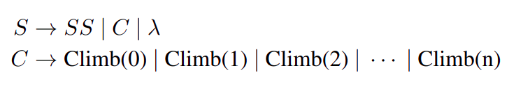
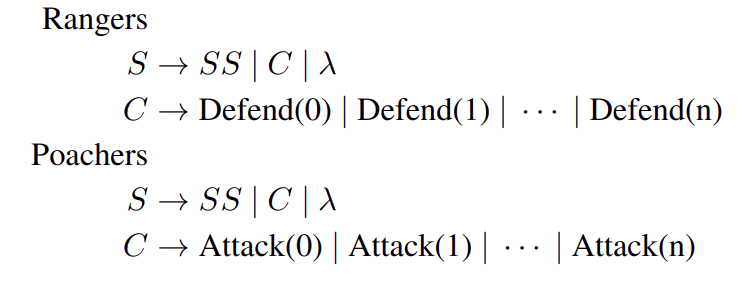
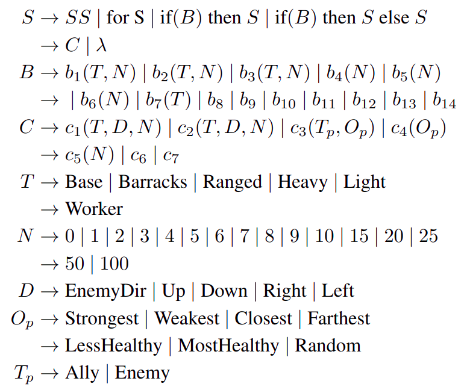
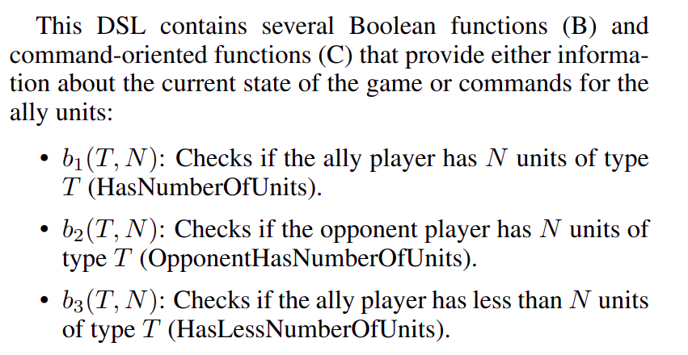
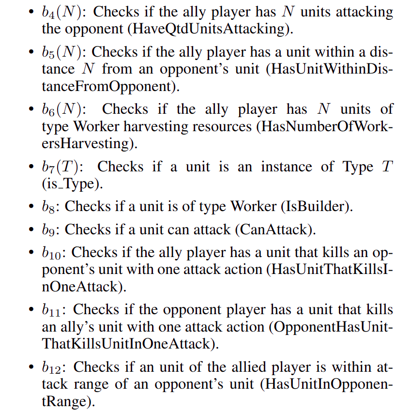
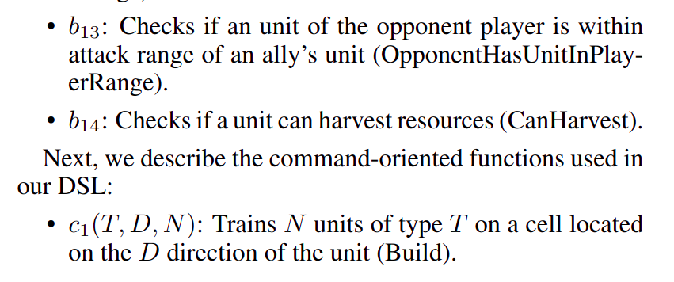
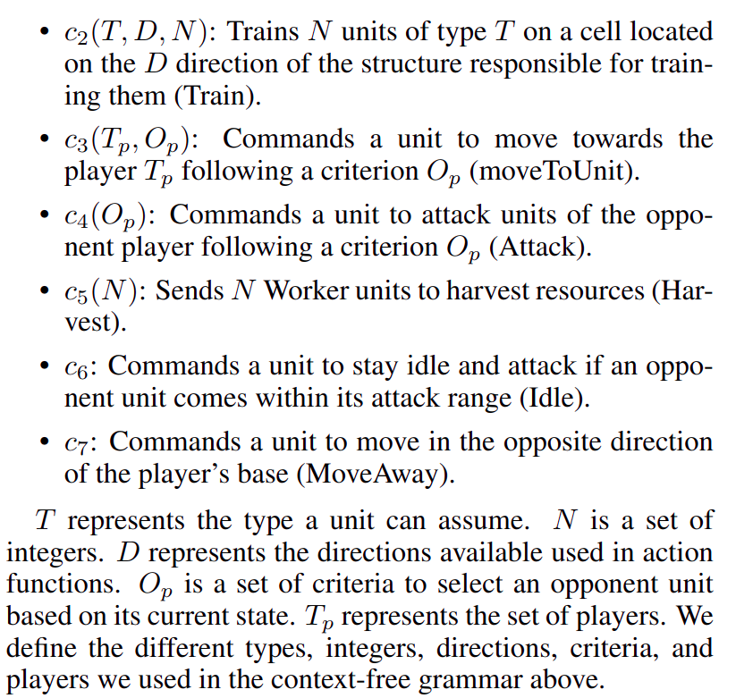
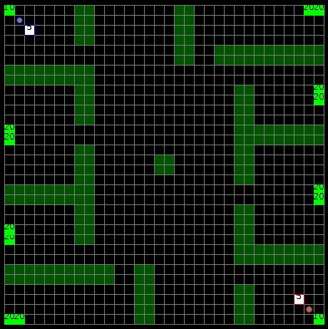

Local Learner
We introduce Local Learner (2L), an algorithm that provides a set of reference strategies to guide the search for programmatic strategies in two-player zero-sum games.
Local Learner (2L) is a learning algorithm based on the PSRO framework that provides a set of reference strategies to guide the search for programmatic strategies in two-player zero-sum games. It actively selects a set of reference strategies to improve the search signal and defines meta-strategies that are "in between" those IBR and FP define in terms of the number of strategies in the meta-strategy's support. 2L can use more strategies than IBR to provide a better signal to the search algorithm, but it also attempts to use fewer strategies than FP to reduce the computational cost of the evaluation.
Iterated Best Response (IBR), Fictitious Play (FP), Double-Oracle (DO), and Local Learner (2L) are all learning algorithms that can be used to guide the search for programmatic strategies in two-player zero-sum games.
IBR is a simple algorithm that iteratively selects the best response to the opponent's strategy and updates its own strategy accordingly.
FP is a more complex algorithm that maintains a probability distribution over the opponent's strategies and updates its own strategy based on the expected payoff of each strategy.
DO is a more sophisticated algorithm that uses linear programming to compute the best response to the opponent's strategy and updates its own strategy accordingly.
2L is a learning algorithm based on the PSRO framework that actively selects a set of reference strategies to improve the search signal and defines meta-strategies that are "in between" those IBR and FP define in terms of the number of strategies in the meta-strategy's support. 2L can use more strategies than IBR to provide a better signal to the search algorithm, but it also attempts to use fewer strategies than FP to reduce the computational cost of the evaluation.
DSL's used in our experiments.
Climbing Monkey
-
We used the following DSL for Climbing Monkey (CM) in our experiments. The terminal λ is an empty string.

Poacher & Rangers
-
We used the following DSLs for Rangers and Poachers, where the terminal λ indicates an empty string.

MicroRTS
-
The DSL we use for MicroRTS was introduced by [Marino et al., 2021] and expanded by [Medeiros et al., 2022]. This
DSL accepts nested if structures and nested for loops. The DSL is described with the following context-free grammar.





MicroRTS Maps
The seven maps used in the MicroRTS experiments are presented here. From left to right and top to bottom we have the following maps:

Detailed Tournament Evaluation
In the MicroRTS tournament, the synthesizer using 2L outperformed programmatic strategies written by human programmers by obtaining the highest average winning rate. The tournament included strategies synthesized with 2L, IBR, FP, DO, as well as the programmatic strategies that won the last two MicroRTS competitions, which were written by programmers. The results showed that 2L synthesized strategies that were never worse and often far superior to strategies synthesized with IBR, FP, and DO in all three domains.